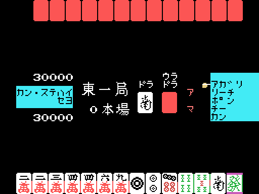

The opponent in this cartridge plays well. It declares riichi, calls pon and chi, defends itself when it is losing and wins expensive hands. What it does not do is think: it never evaluates its hand, never works out waits to decide what to throw, and has nothing resembling a search. What it has is a very well built stage set, and all of it is in the code.
Before anything is dealt, 0x78CE assembles fourteen tiles to order following a plan it keeps in 0xE058: it picks a suit, a target for how many tiles go in triplets, and fills the rest with runs of that suit or with pairs, leaving a pair at the end. Then it takes one away (0x7A93).
Which means the machine starts every hand one single tile short of completing it. And it is not an invisible shortcut: the copies it spends are deducted from the counters at 0xE186, so the player can no longer draw them.
The plan is decided by the machine's own score —one branch when it is in the red, another below 10,000—, by the honba and by several random draws. On the third difficulty, the missing tile is always the one at index 11.
Its thirteen tiles do not move for the whole hand. The tile it draws each turn always lands in the same slot (0xE208), and what goes into its river is a tile drawn at random, not one from its hand (0x583C).
That draw goes through a filter that makes it look like a human discard. On difficulties 2 and 3:
Every rejected candidate goes back into the pile and another is drawn. On the first difficulty there is no filter: whatever comes out, goes out.
It is exactly the order a person discards in —first what is no use, then the extremes, the middle last— arrived at without looking at the hand even once.
Next to the suit filter there is another one meant to avoid throwing terminals, and it is written wrong. It compares the tile's number with 1 and, if it is not a 1, returns; and if it is, it compares that same 1 with 9, which does not match either, and returns just the same:
595C: ld a,(0E22Bh) ; the candidate
595F: and 0Fh ; its number
5961: cp 1
5963: jr nz,5987 ; not a 1 -> accepted
5965: cp 9 ; A is 1: it is never 9
5967: jr nz,5987 ; -> accepted anyway
5969: call ... ; put it back and draw another:
596C: call ... ; THREE instructions that never runThe three instructions below are perfectly well formed and never execute. It barely shows, because the filter on the four discards from the fifth to the eighth already pushes towards the extremes by another route.
When the opponent's face-down hand is drawn, one of the tiles is shown as a gap so you can see where it has just drawn. Which one gets picked is decided by 0x553C: in riichi, and past a certain discard, always the drawn tile's slot; before that, either at random or the drawn tile's, depending on bit 0 of the seed.
There is nothing behind it. The information that gap seems to give you —"it has just drawn and kept that one"— is false half the time.
The machine has a discard number marked (0xE33D) before which it will not call, even holding the hand (0x567B). With ron it lets the tile go by; with tsumo it draws another tile that is not one of its waits. It will not win on its riichi turn either.
And when it finally does call, it demands it be worth it: 2 han or more, or 1 if there are fewer than 5 honba.
It declares riichi exactly on discard number 0xE1BB, which is built by adding to a random draw an amount that depends on the key: 3 on the first difficulty, 5 on the second and 7 on the third. And bit 0 of the seed decides whether that sum happens at all, so half the time the difficulty does not count.
On discard 15, if the player is in riichi with waits and one of three conditions holds —that the opponent's riichi turn falls on 15 or later, that the player has thrown fewer than two honours or terminals, or that the plan has none of the high bits— the machine goes into defence. Also on discard 18, if the seed is even.
In defence its whole behaviour changes: it does not win, it does not declare riichi, and for the first time it really does discard a tile from its hand, picking one that is already in the player's river, which by furiten cannot give them a ron. The gap that leaves is filled with a randomly drawn tile.
| 1 · AMACHUA | 2 · SEMIPROFESSIONAL | 3 · PROFESSIONAL | |
|---|---|---|---|
| furiten ron | refused, no penalty | 12,000 / 8,000 penalty | 12,000 / 8,000 penalty |
| riichi furiten | none | yes | yes |
| discard clock | none | 10 s, warning at 7 | 10 s, warning at 7 |
| help for the player | yes: warns of a ron and blocks discarding your own wait in riichi | no | no |
| opponent's discards | unfiltered | filtered | filtered |
| opponent's riichi turn | draw + 3 | draw + 5 | draw + 7 |
| the built hand | — | — | always missing tile 11 |
| the 0xE33D draw | first one accepted | first one accepted | redrawn if it comes out 20 or more |

And you do not need to remember which key you pressed: the top bar labels it for the whole game, with a different list for each difficulty (0x4CB8).